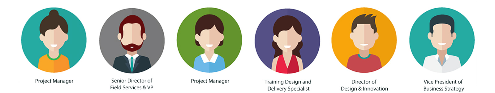

UX Research for CYPQ
Intro
Center for Youth Program Quality (CYPQ) is a non-profit organization that aims to promote the development of children and youth by empowering education and human service leaders with assessments and training. Based on our initial conversation with the client, the center is growing and the number of contracts it holds annually is increasing. However, CYPQ office has experienced some difficulty with project management and communication flow across staff, and they believe streamlining the current system of workflow management would help them continue to grow without needing to hire more people.
Goal
CYPQ needs our recommendations regarding how to build/implement a more efficient and robust working system to help them streamline the workflow.
Background Research
We conducted individual background research to better understand our clients and the problem domain. The background research could also inform the interviews and observations in the following steps and provide useful information to CYPQ.
Five topics were discussed in our reports including general background about the problem, general background about the client, sector research, competitor analysis and scholarly literature review. My report focused on the sector research and answered the following questions:
- What is known about the industry that CYPQ belongs to?
- What are the primary concerns about the industry?
- What are the trends in the industry?
Contextual Interviews and Observations
We determined 3 work groups that surrounded the target activity and each group had 2 people in it to ensure diversity.
Then we created a tailored interview protocol for each group which was comprised by 1 overarching question, about 10 key questions clustered by theme and several follow-up questions. We took turns interviewing the employees and all 6 interviews were conducted in their office where the relevant work was actually happening. Apart from asking questions, we also let interviewees perform their day-to-day workflow so that we could observe as they engaged in the relevant processes. Observations allowed us to look for clues, details and behaviors that could help us gain better insights. Each interview took about an hour and 20 minutes of which were spent on observation.
Interpretation and Affinity Diagrams
Interpretation session were held within 48 hours after the interview, and in each session, interviewers and note takers from that interview would walk other team members through the data and findings they had. Based on the interpretation for 6 interviews, more than 360 affinity notes were created.
We spent 8 hours constructing an affinity wall out of these notes by moving them around to form clusters that had notes containing related content and after that, we generated insightful summarizing notes for each cluster. The affinity wall gave us a way to visualize our interviews in a hierarchical structure and helped us identify and clarify the underlying pattern in the information collected.

Findings
1. Tools used determine efficiency
2. Lack of organization-wide standardized practices of how to use the tools
3. Varying communication styles across the office.
Other findings:
- The needs of CYPQ’ clients vary considerably and it makes it difficult to standardize the workflow.
- I-Drive is not an intuitive tool for the staff.
- Improper use of Microsoft Teams.
Recommandations
We came up with multiple approaches to improve the workflow efficiency for CYPQ office, and they were divided into short-term recommendations and long-term recommendations by how long it would take to implement it.